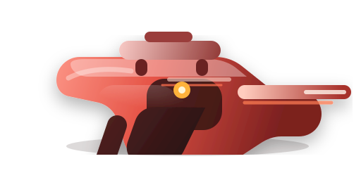
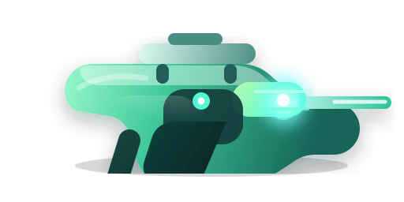
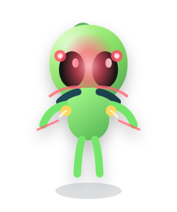
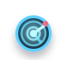

首批可交付资产包 / 都市夜战识别主题
狙击识别伪装外星人
首批游戏美术资产预览
本页汇总了武器卡图、目标识别角色卡与 HUD 图标三类首批资产。视觉基调融合了软 3D 卡通体块、柔和塑料高光、暗色科幻面板、红色准星高亮与冷蓝辅助光，适合直接进入商店、武器库、教程识别页和战斗 HUD 做首版落地。
武器卡图
4
角色识别卡
2
HUD 图标
6
本批适用场景
可直接占位
武器库、商店卡片、能力按钮、道具栏、教程说明面板。
玩法信息对齐
外星人强化红眼脉冲与异常肩线，平民偏冷蓝灰且姿态自然。
风格目标
软 3D 卡通资产语言已经切换到都市夜战狙击 HUD 语境。
武器卡图
四把狙击枪按配置颜色和定位明确区分，横向轮廓适合直接放进商店、武器库或升级界面。整体保持软 3D 体块与轻高光表现，并在暗色界面里具备足够辨识度。
标准灰 / 均衡
战术蓝 / 精准
烈焰红 / 连发
等离子绿 / 电磁



目标识别角色卡
这一组主要服务于教程、识别提示和任务简报。外星人卡突出红眼脉冲、肩线异常和可疑弱点；平民卡保持冷蓝灰色和自然站姿，方便玩家快速学会识别逻辑。
外星人 / 红色可疑点
平民 / 冷蓝灰
教程与图鉴适用


HUD / 商店图标
六个图标保持统一的软 3D + HUD 发光语言，透明背景，适合直接放入深色科幻界面。当前已经可用于 HUD 占位，也可以作为第一轮正式图标投入测试。
透明背景
红色高亮
冷蓝辅助

接入建议与下一步
本批已经可直接进入首版可玩验证。建议先把武器图和图标接到商店、武器库、HUD，再把角色卡接入教程与图鉴页，用真实场景验证读图效率和辨识度。
优先接入
- 武器库卡片与商店列表
- 战斗 HUD 道具按钮
- 新手识别教学页
快速测试
- 缩略尺寸下四把枪是否能一眼区分
- 小尺寸图标在深色 HUD 上是否可读
- 外星人与平民对照是否足够直观
下一批建议
- 角色多姿态与更多伪装变体
- 扫描、锁定、命中特效素材
- 都市夜战场景型 HUD 组件扩展